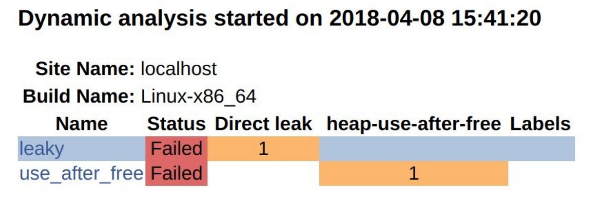

14.3 使用AddressSanifier向CDash报告内存缺陷
NOTE:此示例代码可以在 https://github.com/dev-cafe/cmake-cookbook/tree/v1.0/chapter-14/recipe-03 中找到，其中包含一个C++示例和一个Fortran例子。该示例在CMake 3.5版(或更高版本)中是有效的，并且已经在GNU/Linux、macOS和Windows上进行过测试。
AddressSanitizer(ASan)是可用于C++、C和Fortran的内存检测。它可以发现内存缺陷，比如：在空闲后使用、返回后使用、作用域后使用、缓冲区溢出、初始化顺序错误和内存泄漏(请参见 https://github.com/google/sanitizers/wiki/AddressSanitizer )。从3.1版本开始，AddressSanitizer是LLVM的一部分；从4.8版本开始，作为GCC的一部分。在这个示例中，我们将在代码中加入两个bug，正常的测试中可能无法检测到。为了检测这些bug，我们将使用AddressSanitizer工具，并将CTest与动态分析结合起来，从而将缺陷报告给CDash。
准备工作
这个例子中，我们将使用两个源文件和两个测试集：
.
├── CMakeLists.txt
├── CTestConfig.cmake
├── dashboard.cmake
├── src
│ ├── buggy.cpp
│ ├── buggy.hpp
│ └── CMakeLists.txt
└── tests
├── CMakeLists.txt
├── leaky.cpp
└── use_after_free.cpp
buggy.cpp包含有两个bug：
#include "buggy.hpp"
#include <iostream>
int function_leaky() {
double *my_array = new double[1000];
// do some work ...
// we forget to deallocate the array
// delete[] my_array;
return 0;
}
int function_use_after_free() {
double *another_array = new double[1000];
// do some work ...
// deallocate it, good!
delete[] another_array;
// however, we accidentally use the array
// after it has been deallocated
std::cout << "not sure what we get: " << another_array[123] << std::endl;
return 0;
}
这些函数在相应的头文件中声明(buggy.hpp）：
#pragma once
int function_leaky();
int function_use_after_free();
测试文件leaky.cpp中将会验证function_leaky的返回值：
#include "buggy.hpp"
int main() {
int return_code = function_leaky();
return return_code;
}
相应地，use_after_free.cpp会检查function_use_after_free的返回值:
#include "buggy.hpp"
int main() {
int return_code = function_use_after_free();
return return_code;
}
具体实施
为了使用ASan，我们需要使用特定的标志来编译代码。然后，我们将运行测试并将它们提交到面板。
-
生成bug库的工作将在
src/CMakeLists.txt中完成：add_library(buggy "") target_sources(buggy PRIVATE buggy.cpp PUBLIC ${CMAKE_CURRENT_LIST_DIR}/buggy.hpp ) target_include_directories(buggy PUBLIC ${CMAKE_CURRENT_LIST_DIR} ) -
在文件
src/CMakeLists.txt中，我们将添加一个选项用于使用ASan：option(ENABLE_ASAN "Enable AddressSanitizer" OFF) if(ENABLE_ASAN) if(CMAKE_CXX_COMPILER_ID MATCHES GNU) message(STATUS "AddressSanitizer enabled") target_compile_options(buggy PUBLIC -g -O1 -fsanitize=address -fno-omit-frame-pointer ) target_link_libraries(buggy PUBLIC asan ) else() message(WARNING "AddressSanitizer not supported for this compiler") endif() endif() -
测试在
tests/CMakeLists.txt中定义:foreach(_test IN ITEMS leaky use_after_free) add_executable(${_test} ${_test}.cpp) target_link_libraries(${_test} buggy) add_test( NAME ${_test} COMMAND $<TARGET_FILE:${_test}> ) endforeach() -
主
CMakeLists.txt与之前的示例基本相同：# set minimum cmake version cmake_minimum_required(VERSION 3.5 FATAL_ERROR) # project name and language project(recipe-03 LANGUAGES CXX) # require C++11 set(CMAKE_CXX_STANDARD 11) set(CMAKE_CXX_EXTENSIONS OFF) set(CMAKE_CXX_STANDARD_REQUIRED ON) # process src/CMakeLists.txt add_subdirectory(src) enable_testing() # allow to report to a cdash dashboard include(CTest) # process tests/CMakeLists.txt add_subdirectory(tests) -
CTestConfig.cmake也没有修改：set(CTEST_DROP_METHOD "http") set(CTEST_DROP_SITE "my.cdash.org") set(CTEST_DROP_LOCATION "/submit.php?project=cmake-cookbook") set(CTEST_DROP_SITE_CDASH TRUE) -
这个示例中，我们使用CTest脚本向CDash提交结果；为此，我们将创建一个文件
dashboard.cmake(与主CMakeLists.txt和`` CTestConfig.cmake`位于同一个目录下)：set(CTEST_PROJECT_NAME "example") cmake_host_system_information(RESULT _site QUERY HOSTNAME) set(CTEST_SITE ${_site}) set(CTEST_BUILD_NAME "${CMAKE_SYSTEM_NAME}-${CMAKE_HOST_SYSTEM_PROCESSOR}") set(CTEST_SOURCE_DIRECTORY "${CTEST_SCRIPT_DIRECTORY}") set(CTEST_BINARY_DIRECTORY "${CTEST_SCRIPT_DIRECTORY}/build") include(ProcessorCount) ProcessorCount(N) if(NOT N EQUAL 0) set(CTEST_BUILD_FLAGS -j${N}) set(ctest_test_args ${ctest_test_args} PARALLEL_LEVEL ${N}) endif() ctest_start(Experimental) ctest_configure( OPTIONS -DENABLE_ASAN:BOOL=ON ) ctest_build() ctest_test() set(CTEST_MEMORYCHECK_TYPE "AddressSanitizer") ctest_memcheck() ctest_submit() -
我们将执行
dashboard.cmake脚本。注意，我们使用CTEST_CMAKE_GENERATOR与生成器选项的方式：$ ctest -S dashboard.cmake -D CTEST_CMAKE_GENERATOR="Unix Makefiles" Each . represents 1024 bytes of output . Size of output: 0K Each symbol represents 1024 bytes of output. '!' represents an error and '*' a warning. . Size of output: 1K -
结果将会出现在CDash网站上:

具体实施
这个示例中，成功地向仪表板的动态分析部分报告了内存错误。我们可以通过浏览缺陷详细信息，得到进一步的了解:

通过单击各个链接，可以浏览完整信息的输出。
注意，也可以在本地生成AddressSanitizer报告。这个例子中，我们需要设置ENABLE_ASAN:
$ mkdir -p build
$ cd build
$ cmake -DENABLE_ASAN=ON ..
$ cmake --build .
$ cmake --build . --target test
Start 1: leaky
1/2 Test #1: leaky ............................***Failed 0.07 sec
Start 2: use_after_free
2/2 Test #2: use_after_free ...................***Failed 0.04 sec
0% tests passed, 2 tests failed out of 2
运行leaky测试，直接产生以下结果:
$ ./build/tests/leaky
=================================================================
==18536==ERROR: LeakSanitizer: detected memory leaks
Direct leak of 8000 byte(s) in 1 object(s) allocated from:
#0 0x7ff984da1669 in operator new[](unsigned long) /build/gcc/src/gcc/libsanitizer/asan/asan_new_delete.cc:82
#1 0x564925c93fd2 in function_leaky() /home/user/cmake-recipes/chapter-14/recipe-03/cxx-example/src/buggy.cpp:7
#2 0x564925c93fb2 in main /home/user/cmake-recipes/chapter-14/recipe-03/cxx-example/tests/leaky.cpp:4
#3 0x7ff98403df49 in __libc_start_main (/usr/lib/libc.so.6+0x20f49)
SUMMARY: AddressSanitizer: 8000 byte(s) leaked in 1 allocation(s).
相应地，我们可以直接运行use_after_free，得到详细的输出:
$ ./build/tests/use_after_free
=================================================================
==18571==ERROR: AddressSanitizer: heap-use-after-free on address 0x6250000004d8 at pc 0x557ffa8b0102 bp 0x7ffe8c560200 sp 0x7ffe8c5601f0
READ of size 8 at 0x6250000004d8 thread T0
#0 0x557ffa8b0101 in function_use_after_free() /home/user/cmake-recipes/chapter-14/recipe-03/cxx-example/src/buggy.cpp:28
#1 0x557ffa8affb2 in main /home/user/cmake-recipes/chapter-14/recipe-03/cxx-example/tests/use_after_free.cpp:4
#2 0x7ff1d6088f49 in __libc_start_main (/usr/lib/libc.so.6+0x20f49)
#3 0x557ffa8afec9 in _start (/home/user/cmake-recipes/chapter-14/recipe-03/cxx-example/build/tests/use_after_free+0xec9)
0x6250000004d8 is located 984 bytes inside of 8000-byte region [0x625000000100,0x625000002040)
freed by thread T0 here:
#0 0x7ff1d6ded5a9 in operator delete[](void*) /build/gcc/src/gcc/libsanitizer/asan/asan_new_delete.cc:128
#1 0x557ffa8afffa in function_use_after_free() /home/user/cmake-recipes/chapter-14/recipe-03/cxx-example/src/buggy.cpp:24
#2 0x557ffa8affb2 in main /home/user/cmake-recipes/chapter-14/recipe-03/cxx-example/tests/use_after_free.cpp:4
#3 0x7ff1d6088f49 in __libc_start_main (/usr/lib/libc.so.6+0x20f49)
previously allocated by thread T0 here:
#0 0x7ff1d6dec669 in operator new[](unsigned long) /build/gcc/src/gcc/libsanitizer/asan/asan_new_delete.cc:82
#1 0x557ffa8affea in function_use_after_free() /home/user/cmake-recipes/chapter-14/recipe-03/cxx-example/src/buggy.cpp:19
#2 0x557ffa8affb2 in main /home/user/cmake-recipes/chapter-14/recipe-03/cxx-example/tests/use_after_free.cpp:4
#3 0x7ff1d6088f49 in __libc_start_main (/usr/lib/libc.so.6+0x20f49)
SUMMARY: AddressSanitizer: heap-use-after-free /home/user/cmake-recipes/chapter-14/recipe-03/cxx-example/src/buggy.cpp:28 in function_use_after_free()
Shadow bytes around the buggy address:
0x0c4a7fff8040: fd fd fd fd fd fd fd fd fd fd fd fd fd fd fd fd
0x0c4a7fff8050: fd fd fd fd fd fd fd fd fd fd fd fd fd fd fd fd
0x0c4a7fff8060: fd fd fd fd fd fd fd fd fd fd fd fd fd fd fd fd
0x0c4a7fff8070: fd fd fd fd fd fd fd fd fd fd fd fd fd fd fd fd
0x0c4a7fff8080: fd fd fd fd fd fd fd fd fd fd fd fd fd fd fd fd
=>0x0c4a7fff8090: fd fd fd fd fd fd fd fd fd fd fd[fd]fd fd fd fd
0x0c4a7fff80a0: fd fd fd fd fd fd fd fd fd fd fd fd fd fd fd fd
0x0c4a7fff80b0: fd fd fd fd fd fd fd fd fd fd fd fd fd fd fd fd
0x0c4a7fff80c0: fd fd fd fd fd fd fd fd fd fd fd fd fd fd fd fd
0x0c4a7fff80d0: fd fd fd fd fd fd fd fd fd fd fd fd fd fd fd fd
0x0c4a7fff80e0: fd fd fd fd fd fd fd fd fd fd fd fd fd fd fd fd
Shadow byte legend (one shadow byte represents 8 application bytes):
Addressable: 00
Partially addressable: 01 02 03 04 05 06 07
Heap left redzone: fa
Freed heap region: fd
Stack left redzone: f1
Stack mid redzone: f2
Stack right redzone: f3
Stack after return: f5
Stack use after scope: f8
Global redzone: f9
Global init order: f6
Poisoned by user: f7
Container overflow: fc
Array cookie: ac
Intra object redzone: bb
ASan internal: fe
Left alloca redzone: ca
Right alloca redzone: cb
==18571==ABORTING
如果我们在没有AddressSanitizer的情况下进行测试(默认情况下ENABLE_ASAN是关闭的)，就不会报告错误：
$ mkdir -p build_no_asan
$ cd build_no_asan
$ cmake ..
$ cmake --build .
$ cmake --build . --target test
Start 1: leaky
1/2 Test #1: leaky ............................ Passed 0.00 sec
Start 2: use_after_free
2/2 Test #2: use_after_free ................... Passed 0.00 sec
100% tests passed, 0 tests failed out of 2
实际上，泄漏只会浪费内存，而use_after_free可能会导致未定义行为。调试这些问题的一种方法是使用valgrind (http://valgrind.org )。
与前两个示例相反，我们使用了CTest脚本来配置、构建和测试代码，并将报告提交到面板。要了解此示例的工作原理，请仔细查看 dashboard.cmake脚本。首先，我们定义项目名称并设置主机报告和构建名称:
set(CTEST_PROJECT_NAME "example")
cmake_host_system_information(RESULT _site QUERY HOSTNAME)
set(CTEST_SITE ${_site})
set(CTEST_BUILD_NAME "${CMAKE_SYSTEM_NAME}-${CMAKE_HOST_SYSTEM_PROCESSOR}")
我们的例子中，CTEST_BUILD_NAME的计算结果是Linux-x86_64。不同的操作系统下，可能会观察到不同的结果。
接下来，我们为源和构建目录指定路径:
set(CTEST_SOURCE_DIRECTORY "${CTEST_SCRIPT_DIRECTORY}")
set(CTEST_BINARY_DIRECTORY "${CTEST_SCRIPT_DIRECTORY}/build")
我们可以将生成器设置为Unix Makefile:
set(CTEST_CMAKE_GENERATOR "Unix Makefiles")
但是，对于更具可移植性的测试脚本，我们更愿意通过命令行提供生成器:
$ ctest -S dashboard.cmake -D CTEST_CMAKE_GENERATOR="Unix Makefiles"
dashboard.cmake中的下一个代码片段，将计算出机器上可用的CPU芯数量，并将测试步骤的并行级设置为可用CPU芯数量，以使总测试时间最小化:
include(ProcessorCount)
ProcessorCount(N)
if(NOT N EQUAL 0)
set(CTEST_BUILD_FLAGS -j${N})
set(ctest_test_args ${ctest_test_args} PARALLEL_LEVEL ${N})
endif()
接下来，我们开始测试步骤并配置代码，将ENABLE_ASAN设置为ON:
ctest_start(Experimental)
ctest_configure(
OPTIONS
-DENABLE_ASAN:BOOL=ON
)
dashboard.cmake其他命令为映射到构建、测试、内存检查和提交步骤:
ctest_build()
ctest_test()
set(CTEST_MEMORYCHECK_TYPE "AddressSanitizer")
ctest_memcheck()
ctest_submit()
更多信息
细心的读者会注意到，在链接目标之前，我们没有在系统上搜索AddressSanitizer。实际中，库查找工作已经提前做完，以避免在链接阶段出现意外。
有关AddressSanitizer文档和示例的更多信息，请参见https://github.com/google/sanitizers/wiki/AddressSanitizer 。AddressSanitizer并不仅限于C和C++。对于Fortran示例，读者可以参考 https://github.com/dev-cafe/cmake-cookbook/tree/v1.0/chapter-14/recipe-03/fortran-example 。
NOTE:可以在https://github.com/arsenm/sanitizers-cmake 上找到CMake程序，用来查找杀毒程序和调整编译器标志
下面的博客文章讨论了如何添加对动态分析工具的支持，对我们很有启发性：https://blog.kitware.com/ctest-cdash-add-support-for-new-dynamic-analysis-tools/